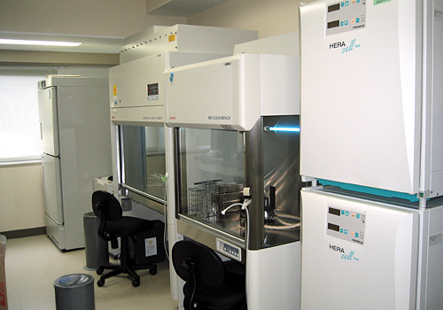
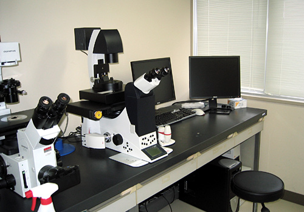
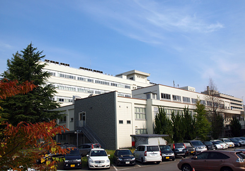
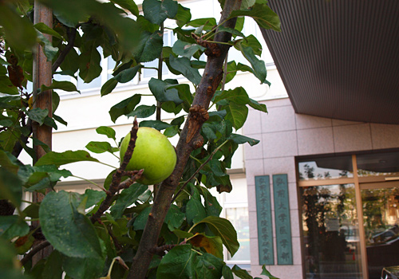
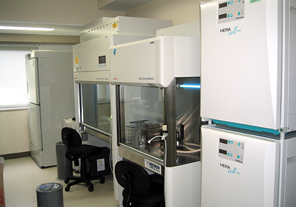
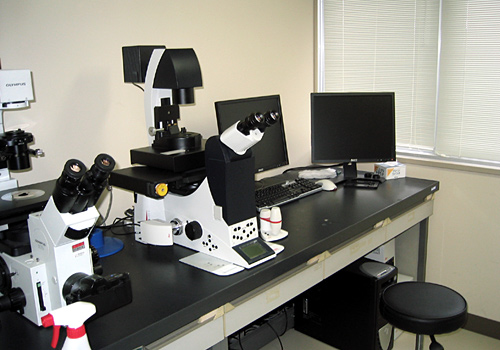
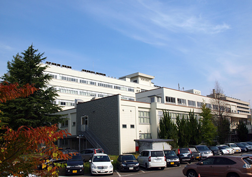
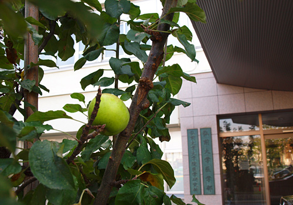

News & Topics

- 2024.2.29
- 野菜生命科学講座で企画協力したベジノサウルスが北東北エリアマガジンrakra vol.122 2024年3・4月号 特集「うれしたのし贈り物2024」に取り上げられました。
- 2024.1.1
- 2006年に設置された附属高度先進医学研究センターは、脳神経血管病態研究施設と統廃合しバイオメディカルリサーチセンターとなりました。
- 2023.11.8
- 伊東教授が受験先生に向けての四谷学院のネットインタビューに答えました。
- 2023.7.27
- Liu先生の論文が2022年のIJMSのtop downloaded papersの1つに選ばれました。
- 2023.3.23
- 伊東教授が兼任教授をしている「野菜生命科学講座」が共同企画に携わった恐竜サブレ「ベジノサウルス」が３月２５日（土）に「中村屋 菓心なかむら」から発売になります。このサブレは有機栽培で作った青森県産６種類の野菜を６種類の恐竜をかたどったサブレに入れており野菜当てクイズができるように工夫しました。弘前の老舗和菓子屋さんが作ったとても美味しいサブレをゲーム感覚で楽しむうちに、お子様が知らないうちに野菜に親しみを持ち好きになることを目指しました。
- 2022.7.6
- 葛西助教が第75回日本酸化ストレス学会で優秀ポスタ−賞を受賞しました！中国からの大学院生であるLiu先生と一緒に行ったGCN1 CKOに関する研究です。元論文はこちらですので、是非、ご一読下さい。
- 2022.7.6
- 葛西助教がJCBN（日本酸化ストレス学会機関紙）に執筆した総説「Role of the ISR-ATF4 pathway and its cross talk with Nrf2 in mitochondrial quality control」がHigh Citation Awardをいただきました。論文はこちらですので、是非、ご一読下さい！
- 2022.3.24
- ポスドクの募集を始めました。募集要項はこちら（PDFファイル）。応募書類の様式は履歴書と研究業績目録をご利用ください。
- 2021.9.1
- 現在IJMSにおいてNrf2の特集号をゲストエディタ−として担当しています。投稿期限は今年いっぱいですので、是非投稿をお願いいたします！
- 2020.8.8
- 社団法人レドックスR&D戦略委員会が設立され、伊東教授が会長になりました。
- 2020.6.26
- 三村講師が実験医学の増刊号に食とNrf2について総説を執筆しました。内田先生の大変すばらしい「序」は無料で読めます。
- 2020.5.7
- ホームページの英語版を更新しました。
- 2020.5.1
- アミノ酸飢餓因子GCN1に関する論文をPLOS geneticsに発表し、プレスリリースしました。資料はこちら
- 2019.12.20
- 忘年会を開催しました。写真館を更新しました。
- 2019.12.8-12
- 伊東教授がSydneyで開催された9th Meeting of SFRR(A+J)でKeynote Presentationを行いました。
- 2019.11.30
- 今年第１回目となる弘前メディカルサイエンスフォ−ラムが開催されます。基礎科学研究の衰退を憂い、有志により立ち上げたフォ−ラムです。ふるってご参加下さい。
- 2019.11.8
- 東北大学薬学研究科の斎藤先生をお招きして、第20回高度先進×脳研×COI合同セミナ−にてセレノプレテインPに関するお話をご講演いただきました。大変、勉強になりました。
- 2019.9.18-20
- 横浜での第92回日本生化学会大会に参加し、伊東教授、三村講師、山嵜助教が発表しました。
- 2019.9.11-13
- 仙台でのEnvironmental Response Vに参加し、伊東教授、三村講師、山嵜助教が発表しました。山本大会長のお嬢様が描かれたポスタ−が傑作です。
- 2019.7.25
- 8月30日（金）、8月31日（土）の両日、伊東教授が世話人となり第17回レドックス・ライフイノベーションシンポジウムを弘前大学にて開催します。事前参加申し込みは8月2日（金）となっております。シンポジウムへの参加は学生は無料となっています。奮ってご参加下さい！ポスタ−はこちら
- 2019.6.27-28
- 伊東教授が札幌で行われた第72回日本酸化ストレス学会学術集会で発表しました。
- 2019.4.4-7
- 京都で行われたThe 9th Biennial Meeting of Society for Free Radical Research-Asia (SFRR-Asia 2019)で発表しました。
弘前大学大学院医学研究科 バイオメディカルリサーチセンター
〒036-8562 弘前市在府町5番地 TEL & FAX：0172-39-5157